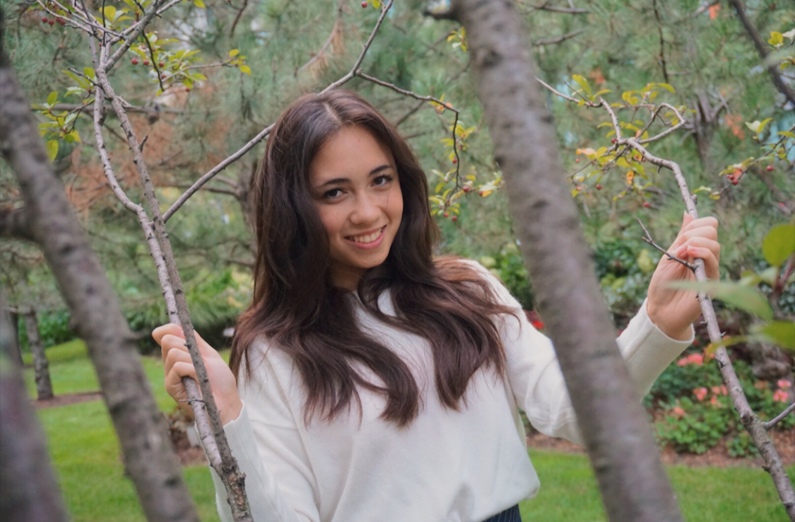

I was born and raised in Chicago my whole life, coming from a family of 7. Yep, my mom, dad, three brothers, and dog. Kuma is a Shiba Inu who's a wonderful conpanion and will instantly become your best friend. My mom is a Filipino immigrant from Bakolod, Philippines, coming to Chicago with her three sisters when she was a young adult. My father comes from a family of Italian heritage, many relatives of whom are from Sicily. I've definitely been exposed to a wide range of cultures growing up.
I've always been very open-minded when it comes to experiencing new things. Aside from school, I love to travel, watch and play tennis (you'll most likely find me watching tennis matches on the TV or my phone haha), make origami and spend time with my friends and family. Art is something I do a lot as well during my free-time, such as sketching, painting, designing, photography, etc. It's definitely my most prominent hobby.
